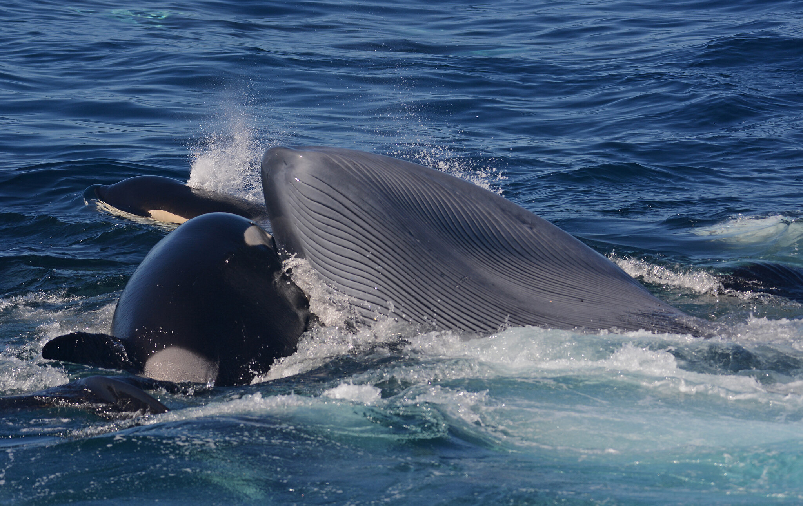
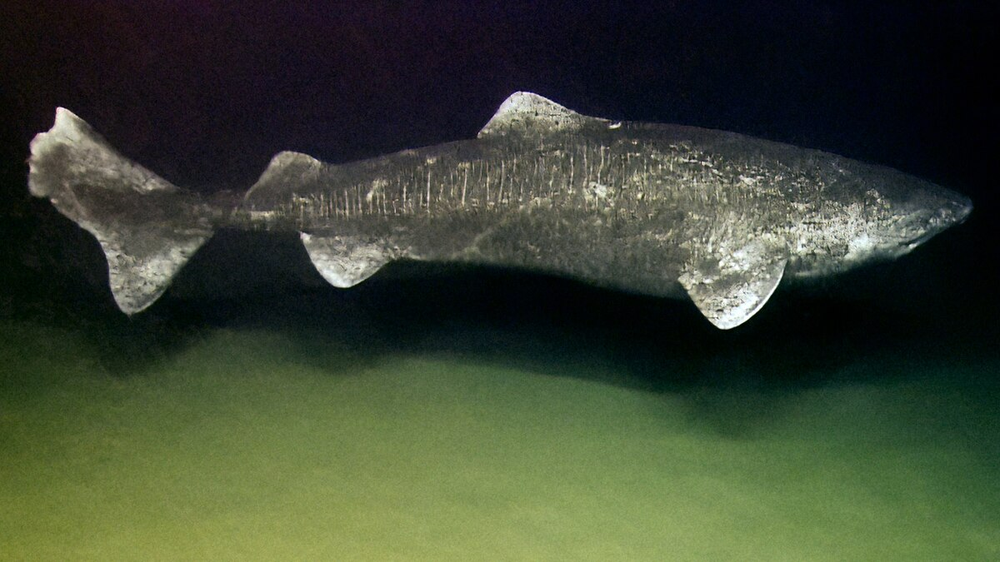

Beslenme: Balıklar, foklar ve diğer deniz memelileriyle beslenir.
Yaşam Alanı: Kuzey Atlantik ve kutup bölgeleri dahil soğuk sularda yaşar.
Zeka: Sosyal ve çok zeki canlılardır. Avlanma taktikleri ve sosyal yapıları karmaşıktır.
Diğer Bilgiler: Orkalar grup halinde (pod) yaşar, iletişim için farklı sesler kullanır. Uzun ömürlü ve güçlü avcılardır.
İlginç Olay: Bilim insanlarının kaydettiğine göre, Avustralya’nın güneybatı kıyılarında Bremer Bay yakınlarında ilk kez orkaların yetişkin mavi balinayı birlikte avlayarak öldürdüğü ve yediği belgesel ve gözlem kayıtlarıyla doğrulandı. Bu özel avlanma olayında bir sürü orka, koordineli hareket ederek 18–22 metre uzunluğundaki mavi balinayı yıprattı ve sonunda avladı. Bu tür büyük av olayları daha önce sadece “kovalama” şeklinde rapor edilse de, bu kayıtlar orkaların gerçekten büyük bir balinayı hedef alıp birlikte öldürebildiğini gösteriyor.

Bilimsel Adı: Somniosus microcephalus
Yaşam Alanı: Kuzey Atlantik ve Arktik sularında, derin ve soğuk bölgelerde yaşar.
Beslenme: Balıklar, mürekkep balıkları ve deniz memelileriyle beslenir; bazen leşçidir.
Fiziksel Özellikler: Yavaş hareket eder, büyük boyutlu ve uzun ömürlüdür. Gözlerinde parazitler bulunabilir.
Ömür: Yaklaşık 200–400 yıl yaşayabilir, üremek icin olgunluğa yaklaşık 150 yaşında ulaşırlar; en uzun yaşayan omurgalılardan biridir.